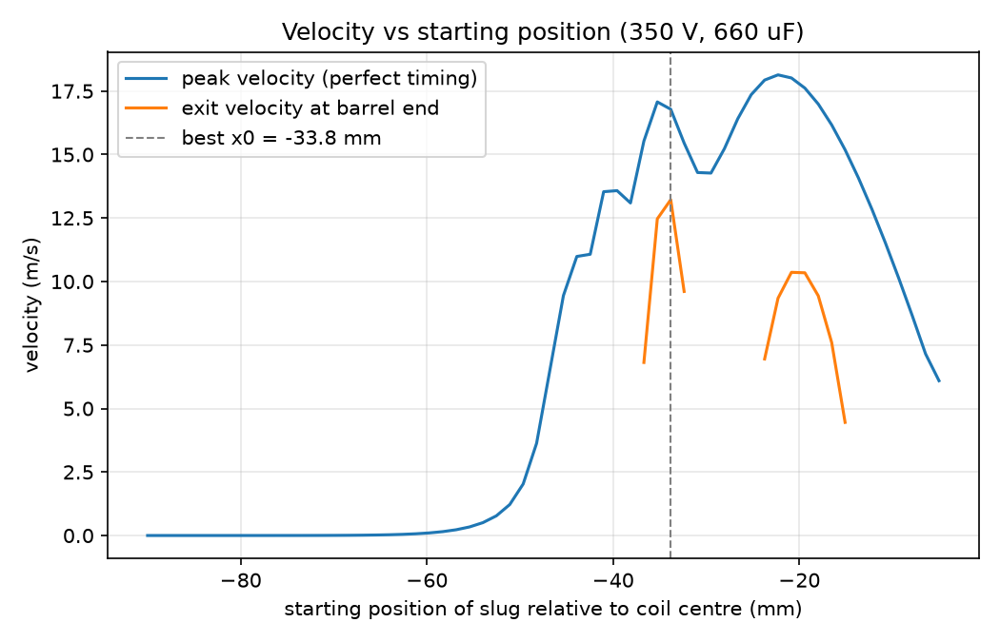
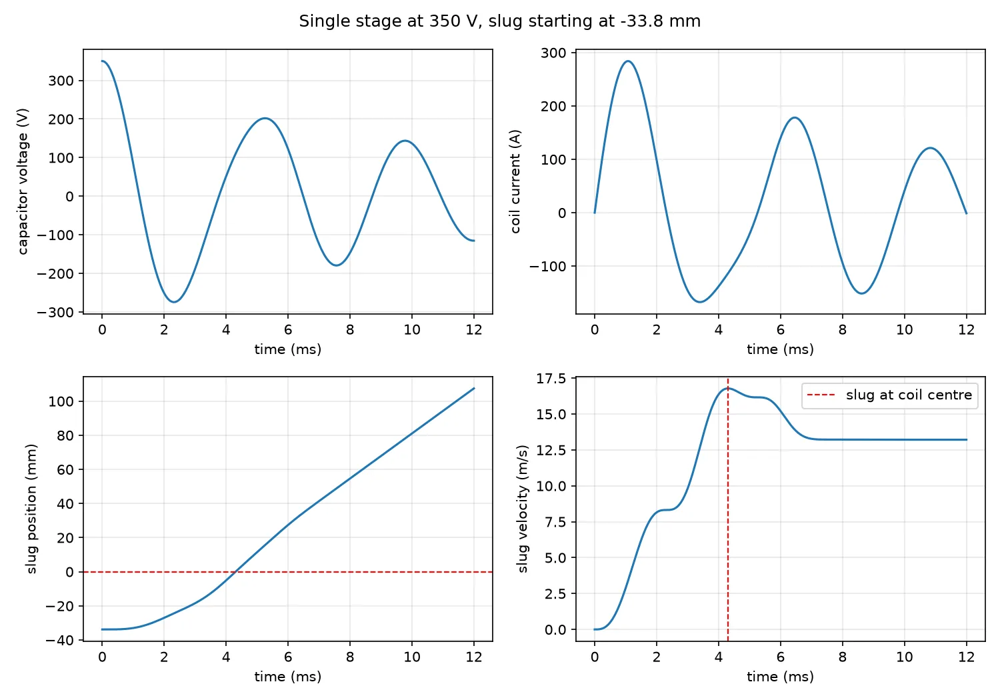

Independent R&D · Software
Coilgun Timing Simulator
I built the coilgun first and measured it. Then I wrote the physics engine that explains it — a Python simulator coupling capacitor discharge to projectile motion through a position-dependent inductance, solved with a custom RK4 integrator and checked against conservation laws rather than against the answer I wanted.
- Python
- NumPy
- Numerical methods
- Electromagnetics
- pytest
- GitHub Actions
- Role
- Sole developer
- Timeline
- Aug – Sep 2026
- Type
- Physics simulation
- Language
- Python

01 — Overview
The hardware came first. Now the model.
My two-stage accelerator reaches about 11 m/s with both stages firing. Fired on a single stage at 350 V, the 54.64 g steel slug chronographs at 6–7 m/s, and that single-stage shot is what this simulator models. That number was measured, not predicted — I had no way to say why it was that value, or what to change to improve it. This simulator answers both questions from first principles.
- Predicted suckback loss
- 46.8%
- Energy conservation error
- 6e-14
- Automated tests
- 22
02 — The challenge
The force has to come from somewhere real.
A coilgun is not two independent problems. The capacitor discharge drives the coil, but the projectile moving through that coil changes the coil’s inductance, which feeds back into the circuit. Model them separately and you get a simulation that looks plausible and is quietly wrong.
- Integrate a lightly damped, oscillatory circuit accurately enough that timing predictions mean something.
- Couple the projectile’s motion to the circuit without breaking energy conservation.
- Handle two physically different projectiles — a ferromagnetic slug and a permanent magnet — under one set of equations.
- Verify the result without tuning parameters until it matched the measurement.
03 — Engineering process
Build the solver, then the physics, then the proof.
A physics-agnostic integrator
I wrote a generic 4th-order Runge–Kutta stepper that takes a state vector, a step size, and a derivative function. It knows no physics at all, which is why growing from a one-variable RC circuit to a five-variable coupled model never required rewriting it.
Coupling the circuit to the projectile
The coil’s inductance depends on where the projectile is, and that dependence is the entire source of the force. The state becomes [V, I, x, v, W] — voltage, current, position, velocity, and cumulative resistive heat. The force term and the back-EMF term both derive from the same dL/dx; keeping one without the other would let the projectile gain energy the capacitor never supplied. Not an inaccuracy — a free-energy machine that would neither crash nor look obviously wrong.
Two projectiles, one model
A ferromagnetic slug only changes the coil’s own inductance. A permanent magnet also pushes its own flux through the coil, independent of current — a force linear in current rather than quadratic. Writing the total flux linkage as λ = L(x)·I + λ_pm(x) covers both, and setting the magnet term to zero reduces exactly to the ferromagnetic case.
Tooling
A CLI accepting JSON config files, per-parameter flags, or an interactive prompt; CSV export; a parameter sweep with matplotlib output; and a pytest suite running on three Python versions in GitHub Actions.
04 — Validation
Four checks, and proof they can fail.
A simulation that produces plausible numbers is worthless without evidence it is right. I validated four ways, each catching a different class of error.
- Against the closed-form solution. The underdamped RLC circuit has an exact analytic answer to compare against.
- Convergence order. A true 4th-order method cuts its error 16× when the step size halves. Measured 16.01 for the circuit and 16.04 for the coupled model.
- Energy conservation. Capacitor, inductor, kinetic, and dissipated heat must sum to a constant at every step. Holds to 6×10⁻¹⁴ relative.
- Numerical differentiation. Both analytic derivatives checked against central differences, since a dropped factor of two would not crash — it would just produce a confident wrong answer.
One result was worth the detour: at my production step size the convergence ratio read 14.7 instead of 16, and nothing was wrong. The error had fallen to 10⁻¹⁴ relative — the double-precision floor — so the test was measuring rounding noise rather than the method. The fix was to test at a coarser step where truncation error still dominates.
I also broke the code on purpose to confirm the tests could fail: removing the back-EMF term, flipping the force sign, and dropping a factor of two each triggered exactly the test written to catch it, with no spurious failures elsewhere.
05 — Result
The model says nearly half the muzzle velocity is thrown away.

The model reproduces suckback without being told to: the inductance gradient changes sign at the coil centre, so the coil pulls the projectile in on approach and drags it back on the way out. Simulated peak velocity lands at the coil centre to within a hundredth of a millimetre — a behaviour that emerges from the equations rather than being programmed in.
At my actual projectile placement, the simulator predicts a peak of 18.14 m/s but an exit velocity of only 9.64 m/s. In the model, 46.8% of the velocity is lost after the projectile passes the coil centre.
Sweeping the starting position produced a testable prediction about my own hardware: I had placed the projectile almost exactly where peak velocity is maximised, but peak is not what leaves the barrel. Starting it about 12 mm further back trades a little peak speed for far less braking time — a predicted gain from 9.64 to 13.22 m/s, roughly 37%, that I have not yet tested on the hardware.
- Predicted exit velocity today
- 9.64m/s
- After moving the slug 12 mm back
- 13.22m/s
- Recovered
- ~37%
06 — Honesty
What the model gets wrong, and why I left it wrong.
The simulator predicts 9.64 m/s where I measure 6–7. It over-predicts by roughly 45%, and I did not tune any parameter to close that gap.
Over-prediction is the expected direction. The model omits eddy currents in a solid 44 mm slug, magnetic saturation at peak currents in the hundreds of amps, barrel friction, and the rise in coil resistance as it heats — every one of which removes energy. Several inputs are also estimates rather than measurements: I derived the inductance-bump width from geometry rather than fitting it, and Wheeler’s formula puts my assumed coil inductance within about 27% of an independent estimate.
A model fitted until it matches its own validation data proves nothing. A model that misses by 45% in the direction its missing physics predicts is evidence the structure is right, and it tells me exactly what to measure next.